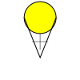
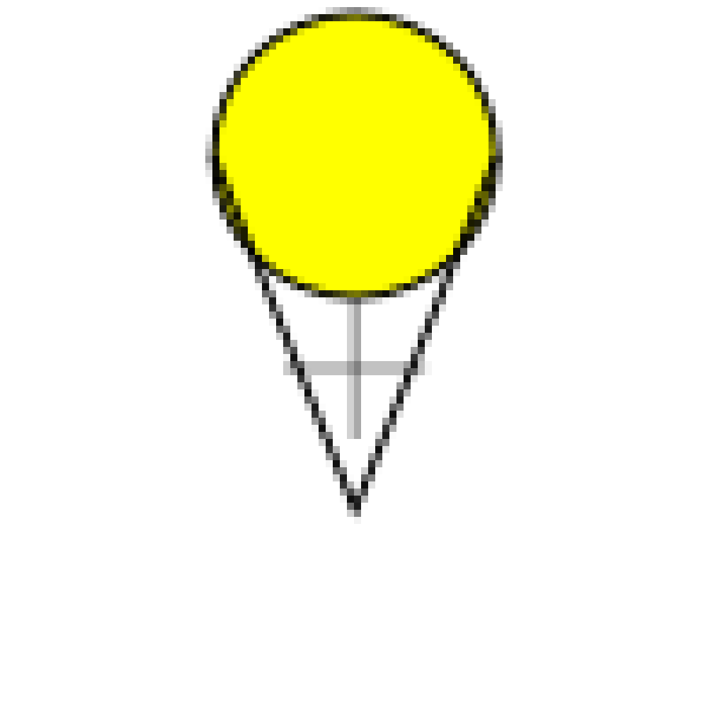
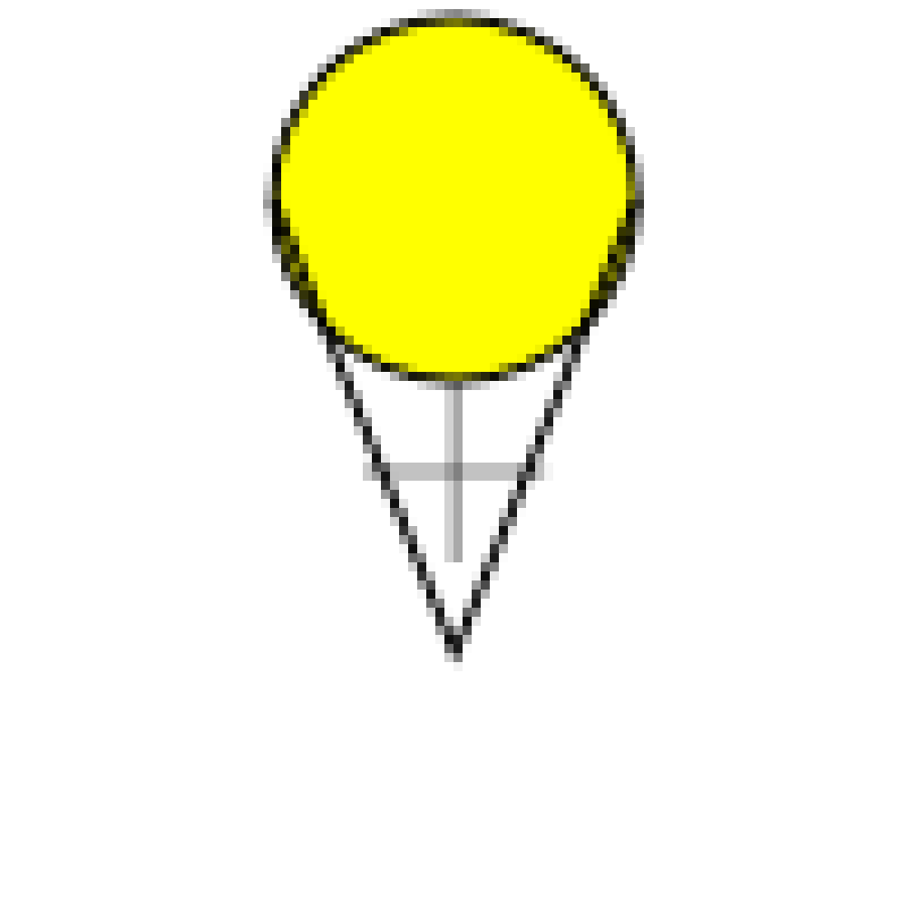

Unlike raster images (photos, covered in Unit One) vector graphics do not consist of pixels arranged on a grid with different values. Instead vector graphics are stored as sets of instructions that a computer can run to re-create a graphic.
A simplistic example of these instructions could be:
Create a circle with a center 3 units above the center of the image, and a radius of 2 units.
Fill circle with yellow
Create a line from 2 units below the center of the image to 3 units above and two units left of the center of the image.
Create a line from 2 units below the center of the image to 3 units above and two units right of the center of the image.
If there were a program that could run this very simple script, it might draw to the screen the following:

The good thing about this is that you'll most likely never have to actually look at the script the computer creates, just like you never have to look at the array of pixels and channels that are stored in a photograph. However, if you want to get advanced, that would be possible (and quite a bit easier than editing a raster image). Instead, we will be using tools that convert the things we draw with the mouse and keyboard into one of these scripts that the computer can follow when it wants to re-produce an image to view on the screen (the screen is really just a raster graphic viewer). Then when we are all done, we can have it run the script again to produce another raster graphic that can be saved into a PNG file.
It is also possible for this script to include a certain amount of time to wait before something happens. This allows for animations; some simple examples would be having a stick figure move across the image or having a ball bounce.
One of the very important benefits of vector images is that all the commands for the image are relative. If you need to increase the size of the image, you just need to change the units that all the commands are applied to. In the above example, one unit equals approximately 10 pixels, but this could easily be modified so that one unit equals 20 pixels or even 100 pixels. The image would automatically scale up to the new size without losing any quality, the image will stay crisp and you won't see any pixel artifacts. This is the opposite of how photos work, there if you were to try to scale the photo up to double or ten times the original size, you would see problems show up in the image. 
The primary file format currently in use is SVG or Scalable Vector Graphics (see: http://en.wikipedia.org/wiki/Svg ) which is a type of human readable file called XML (eXtensible Markup Language see: http://en.wikipedia.org/wiki/XML). Although XML and SVG are human-readable, we will not be reading them directly as part of this material. SVG is supported in most vector drawing programs, however it is not yet supported by all web browsers (though this is rapidly changing). If you simply want to use your images on web pages, it is best to convert them to Portable Network Graphics (PNG) which is a lossless raster format.
The other major format for Vector Graphics is the EPS or Encapsulated Post Script. Post Script itself is a file type used for printing (especially industrial printing), and EPS images are built to be easily put inside of a Post Script document. This format has been around a lot longer than SVG, and is supported by many more tools (especially the old ones). Likewise, it is not recommended for use with web browsers.